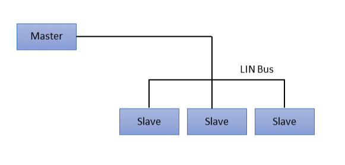
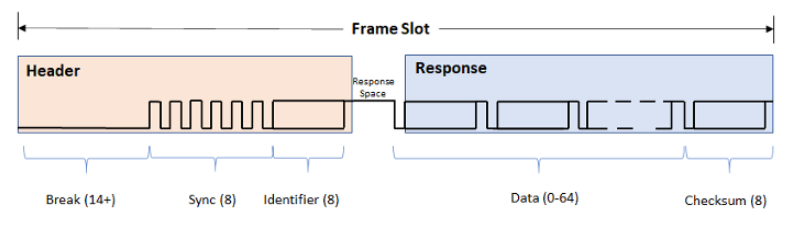
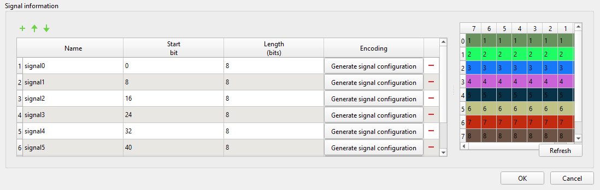
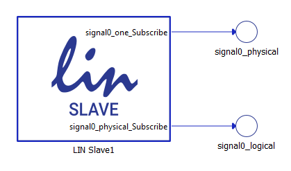
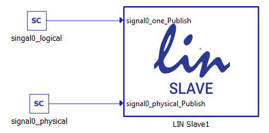
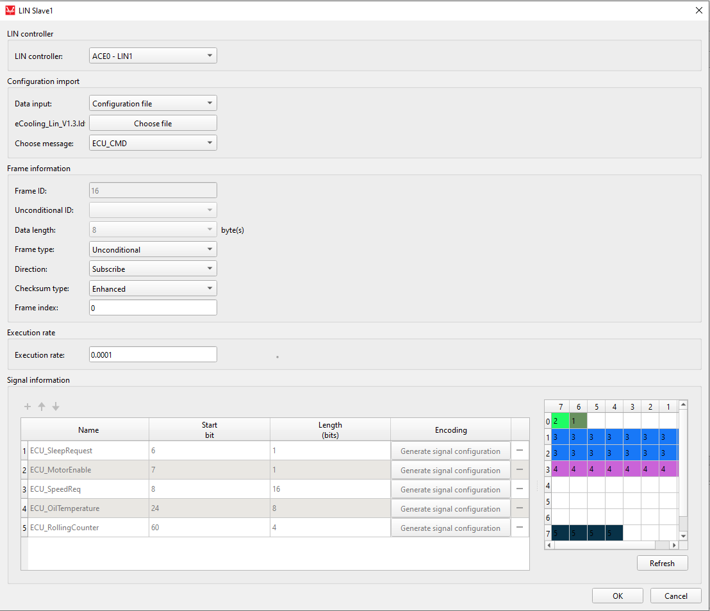

LIN Bus Protocol
Description of the LIN protocol and its implementation in the Typhoon HIL toolchain.
LIN protocol introduction
LIN (Local Interconnect Network) is a communication protocol used for connecting low-speed electronic components and sensors within a vehicle. It is designed as a cost-effective and simple alternative to CAN protocol. Operating at speeds up to 20 kbps, LIN supports a single-master, multiple-slave architecture with deterministic message scheduling. Its time-triggered communication and low wiring complexity make it ideal for non-critical applications such as window lifters, seat controls and climate sensors.
The LIN bus interface is a sub-system based on a serial communication protocol. Only the Master is able to initiate a LIN communication. LIN protocol in automotive is a broadcasting serial network comprising 16 nodes (one Master and typically up to 15 slaves).

A LIN frame consists of a header and a response part. To initiate the LIN bus communication with a slave, the Master sends the header part. If the Master wants to send data to the Slave, it goes on sending the response part. If the Master requests data from the Slave, the Slave sends the response part.
Direct communication between slaves is not possible. But as all slaves listen to the bus, a master request can be used to handle slave-to-slave communication.

- Header:
- Break - Minimum of 13 + 1 bits but most often 18 + 2 bits. Acts as Start of Frame.
- Sync - Predefined as 0x55 (01010101) and allows LIN nodes to determine the baud rate used by the Master node.
- Identifier - 6 bit ID followed by 2 parity bits. The ID identifies each LIN message sent and which nodes should react to it.
- Response:
- Data - Followers may respond to a header with 2, 4 or 8 bytes of data. The data length depends on the ID range with values 0-31 indicating 2 bytes, 32-47 indicating 4 bytes, and 48-63 indicating 8 bytes.
- Checksum - 8 bit field that ensures validity of a LIN frame.
- Unconditional frames - This is a ‘Normal’ type of LIN bus communication.. The Master sends a frame header in a scheduled frame slot. The destination node fills the frame with data.
- Event-Triggered frames - Their purpose is to receive as much information from slave nodes without overloading the bus with frames. A slave only updates the data in an event-triggered frame when the value has changed. If more than one Slave wants to update the data in the frame, a collision occurs. The Master should then send unconditional frames to each of the slaves, starting with the one with the highest priority.
- Sporadic frames - This method provides some dynamic behavior to otherwise static LIN protocol. The header of a sporadic frame is only sent from the Master when it knows that a signal has been updated in the slave node. Usually, the Master fills the data bytes of the frame itself, and the slave nodes will be the receiver of the information.
- Diagnostic frames - A pair of MasterRequest (0x3C) and SlaveResponse (0x3D) frames. Used to send information that is not described in the LDF. No static signal mapping as with Unconditional, Event-Triggered and Sporadic frames.
LIN Bus protocol in Typhoon HIL toolchain
Currently, LIN Bus functionality in Typhoon HIL is implemented only using Typhoon HIL devices (HIL101, HIL404, HIL506, and HIL606) and the ACE board (Automotive Communication Extender).
The connector pinout for the LIN controllers on the ACE board is described here: Automotive Communication Extender card pinouts.
ACE LIN Setup

The ACE LIN Setup component is shown in Figure 4. It is used for configuring the LIN controllers located on the Automotive Communication Extender (ACE). Each ACE device has 8 LIN controllers.
- General (Tab)
- Device ID
- Choose the Device ID corresponding to the ACE board for which the settings apply
- Ethernet port
- Choose the Ethernet port to which the ACE board is connected
- Execution rate
- Signal processing execution rate. Execution rate must match with the other components used in the model.
- Device ID
- LINx (Tab)
- LINx protocol type
- Choose between LIN Master or LIN Slave. Typhoon HIL currently supports only slave nodes.
- Baudrate configuration type
- Manual - Baud rate will be speified by LINx baud rate property
- Automatic - Baud rate will be calculated automaticaly based on the received sync byte.
- LINx baud rate
- Choose baud rate value for specified LIN controller.
- LINx number of stop bits
- Specifies number of stop bits in the LIN frame.
- LINx initial NAD
- Specifies 8-bit initial Node Adress of LIN slave node. Used as Node Address if it holds different value than configured NAD.
- LINx configured NAD
- Specifies 16-bit configred Node Adress of LIN slave node. Used as Node Address if it holds different value than initial NAD.
- LINx function ID
- Specifies 16-bit LIN Product Identification number, describing the function of the LIN node assigned by supplier.
- LINx supplier ID
- Specifies 16-bit value, with most significant bit qual to zero (reserved for future use). The supplier ID represents the supplier of the fully operational slave node.
- LINx variant
- Specifies 8-bit value of the slave node. Representing variant of the slave with the same function.
- LINx protocol type
- Status output on all ACE Setup components indicates:
- Backward compatibility - During the configuration phase of the ACE card,
a backward compatibility check is executed to validate if the
firmware of the ACE card and the firmware of the HIL setup are in agreement.
Depending on the validity of the two firmwares, the first two bits of the status
output are set/reset.
- xxxx xxx1 - Valid firmwares on both THCC (Typhoon HIL Control Center) and ACE side.
- xxxx xx1x - Firmware on either ACE or HIL is not valid. Update THCC and ACE firmware version.
- Configuration errors - If configuration of some of the ACE
protocols is not applied successfully, the corresponding bit will be
set.
- xxxx x1xx - CAN protocol is not configured properly.
- xxxx 1xxx - SPI protocol is not configured properly.
- xxx1 xxxx - LIN protocol is not configured properly.
- xx1x xxxx - SENT protocol is not configured properly.
- If any available protocol reports a configuration error, simply reboot the ACE card and reload the SCADA simulation.
- Backward compatibility - During the configuration phase of the ACE card,
a backward compatibility check is executed to validate if the
firmware of the ACE card and the firmware of the HIL setup are in agreement.
Depending on the validity of the two firmwares, the first two bits of the status
output are set/reset.
LIN Slave
The LIN Slave component is shown in Figure 5. It is used to specify the format of a single LIN Frame to be published or subscribed to.
- LIN Controller
- Choose which controller will be used to publish/subscribe data of the frame. The available options will depend on available ACE LIN Setup components. If multiple LIN Setup components with different Device IDs are available, selection will be 8 x number_of_available_ace_devices.
- Data input
- Choose if the message is defined manually through the Dialog window, or if the message is defined through a Configuration file.
- Configuration file
- Choose a configuration file to parse. The file can be in LDF format.
- Choose message
- Choose message from a configration file to simulate.
- Frame ID
- Specifies frame identifier value. The value can be in range 0 - 59. Multiple LIN Slave components can have the same identifier value if they are subscribers to it, since only one publisher of the data can exist per frame on one LIN cluster.
- Unconditional ID
- Used with Event frames, it specifies from which slave frame data will be copied and published. Referenced frame must be defined in the same Schematic and must be of subscriber direction.
- Data length
- Specifies length of the frame payload in bytes (8 bits).
- Will be automatically set to 8 with Diagnostic frames, and to a length of a referenced frame with Event frames.
- Frame type
- Choose which type of frame to simulate.
- Unconditional - Regular publish/subscribe of LIN frames.
- Event - Copies values from designated Unconditional subscribe frame and publish them only if new values are detected.
- Diagnostic - Automatically set to subscribe direction, frame
ID set 60, responses to Slave Response frames (ID=0x3D) will
be published automatically based on the Service Identifier
provided by master node. Only Single Frame Services are
supported. Supported Services with different identifiers:
- Assign NAD - 0xB0
- Conditional change NAD - 0xB3
- Data dump - 0xB4
- Save configuration - 0xB6
- Assign Frame ID range - 0xB7
- Identification - 0xB2
- Choose which type of frame to simulate.
- Direction
- Specifies the direction of data for this frame.
- Checksum type
- Specifies what type of checksum will be used with this frame.
- Frame index
- Specifies index of this frame. All frames must have unique indexes. Used with Diagnostic frames with Assign Frame ID range (0xB7) service identifier.
- Execution rate
- Signal processing execution rate. Execution rate must match with the other components used in the model. Only available with subscribe direction.
With the + (plus) button, a new signal is added to the signal table in the LIN Slave dialog window. All signals are unpacked in the manner defined by the signal parameters.
Figure 6 shows how the signals can be defined.

- Name - name of the signal that is shown on the LIN Slave component
- Start bit - the start bit of the signal in LIN frame
- Length - length of the signal in bits
- Encoding - When clicked opens up the Generate signal configuration window that specifies signal encoding of that particular signal.
- Encoding type
- physical - Calculation of Scada/Bus value is done using Min, Max, Scale and Offset parameters of the same table and same row.
- logical - Scada/Bus value is asociated with only one value defined in Logical value column of the same row.
- Logical value
- Defines the signle value that will trigger this signal. Available only with logical type encodings.
- Min
- Specifies minimum valid value used with physical encoding calculation.
- Max
- Specifies maximum value used with pysical encoding calculation.
- Scale
- Specifies scale parameter used with pyhsical encoding calculation.
- Offset
- Specifies offset parameter used with pyhsical encoding calculation.
- Text
- Specifies text description of logical value.
- Unit
- Specifies unit used with pyhsical encoding calculation.
Physical values will be shown and entered via Typhoon HIL Scada depending on direction of the frame. Coded values will be provided on LIN Bus. Formulas used for calculation of physical and coded values:
coded_value = (physical_value - offset) / scale
physical_value = coded_value * scale + offset


Using configuration files to specify LIN frames
LIN Slave component can import LDF files to define the frames. The principle is the same for both publishing and subscribing frames and it will be demonstrated only on the subscribing LIN frame.
To load the configuration file, you must choose Configuration file as the Data input property and navigate to the desired file using the Choose file button. If the file is parsed correctly, the Choose message combo box will be populated with the frame names from the file. Choosing different frames will change the frame and signal parameters in the dialog. An example is shown in Figure 9.

When using LDF files to define LIN frames, all frame and signal parameters are disabled for editing. If the Data input is changed to Dialog window, the parameters will be enabled for editing, but if the Data input is subsequently changed back to Configuration file, the parameters will be changed back to the values from the configuration file.